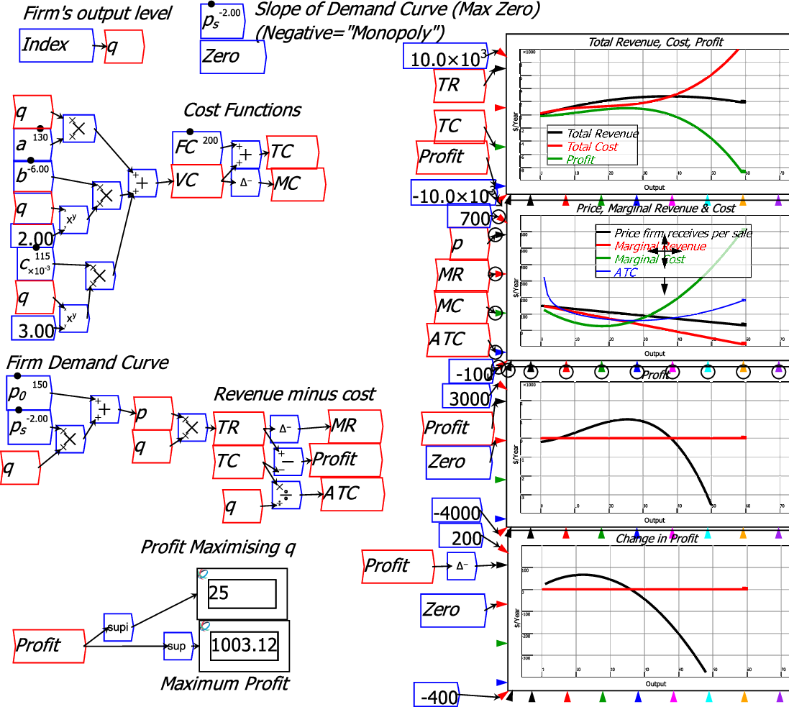
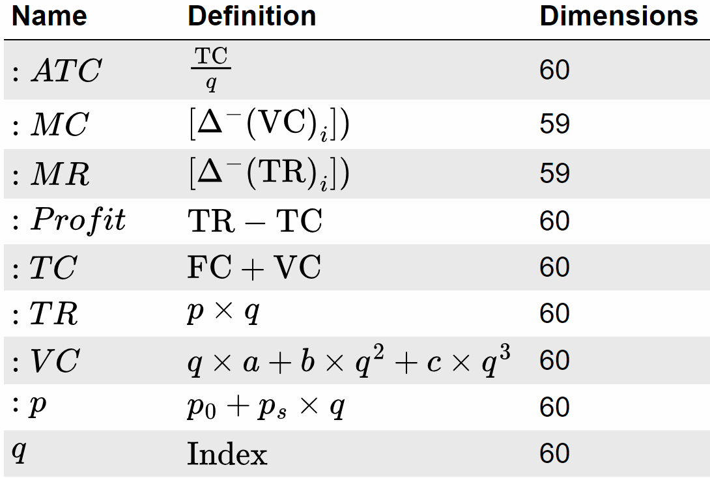
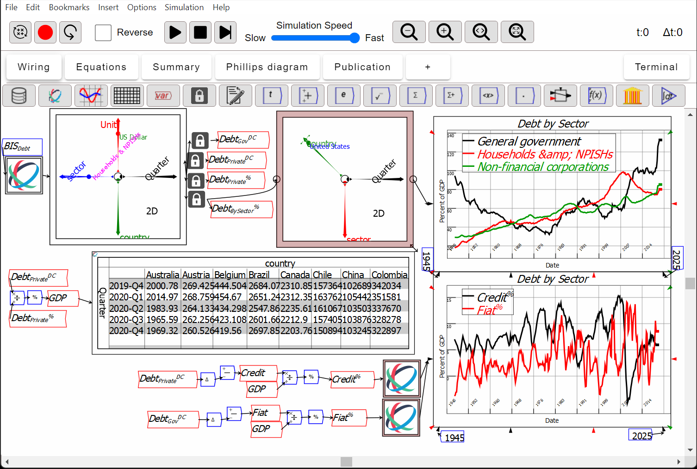
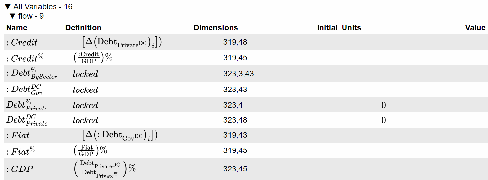

This tab provides a summary table of all variables in the system, in a heirarchical fashion. Each variable is fully documented including its name, definition, dimensions (for tensor-valued variables), units and current value.
For example, this is a Ravel file modelling the economics textbook concept of a profit-maximizing firm.

The next figure shows an extract from the summary tab documentation for this model.

This document imports data from the Bank of International Assessments, separates the data into a number of variables, and uses data on debt in domestic currency and debt as a percentage of GDP to derive GDP in domestic currency data.

This is the Summary Tab for that model, showing the variable names, their mathematical definitions, their dimensions, and any initial values assigned to them.

Most of these fields are editable. Changing a variable's name will do a replace all instances operation to update all variables of the same name. Changing a variable's definition will replace the wiring graph leading into the variable by a user defined function containing your edited string. At some future point, functionality will be added to convert a user defined function into a wiring graph.